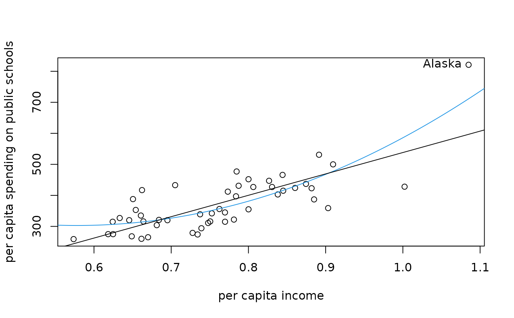

PublicSchools.RdPer capita expenditure on public schools and per capita income by state in 1979.
data(PublicSchools)
A data frame containing 51 observations of 2 variables.
per capita expenditure on public schools,
per capita income.
Table 14.1 in Greene (1993)
Cribari-Neto F. (2004). “Asymptotic Inference Under Heteroskedasticity of Unknown Form.” Computational Statistics \& Data Analysis, 45, 215-233.
Greene W.H. (1993). Econometric Analysis, 2nd edition. Macmillan Publishing Company, New York.
US Department of Commerce (1979). Statistical Abstract of the United States. US Government Printing Office, Washington, DC.
## Willam H. Greene, Econometric Analysis, 2nd Ed. ## Chapter 14 ## load data set, p. 385, Table 14.1 data(PublicSchools) ## omit NA in Wisconsin and scale income ps <- na.omit(PublicSchools) ps$Income <- ps$Income * 0.0001 ## fit quadratic regression, p. 385, Table 14.2 fmq <- lm(Expenditure ~ Income + I(Income^2), data = ps) summary(fmq)#> #> Call: #> lm(formula = Expenditure ~ Income + I(Income^2), data = ps) #> #> Residuals: #> Min 1Q Median 3Q Max #> -160.709 -36.896 -4.551 37.290 109.729 #> #> Coefficients: #> Estimate Std. Error t value Pr(>|t|) #> (Intercept) 832.9 327.3 2.545 0.01428 * #> Income -1834.2 829.0 -2.213 0.03182 * #> I(Income^2) 1587.0 519.1 3.057 0.00368 ** #> --- #> Signif. codes: 0 ‘***’ 0.001 ‘**’ 0.01 ‘*’ 0.05 ‘.’ 0.1 ‘ ’ 1 #> #> Residual standard error: 56.68 on 47 degrees of freedom #> Multiple R-squared: 0.6553, Adjusted R-squared: 0.6407 #> F-statistic: 44.68 on 2 and 47 DF, p-value: 1.345e-11 #>#> (Intercept) Income I(Income^2) #> 832.9144 -1834.2029 1587.0423#> (Intercept) Income I(Income^2) #> 327.2925 828.9855 519.0768#> (Intercept) Income I(Income^2) #> 460.8917 1243.0430 829.9927if(require(lmtest)) { ## compare t ratio coeftest(fmq, vcov = vcovHC(fmq, type = "HC0")) ## White test, p. 393, Example 14.5 wt <- lm(residuals(fmq)^2 ~ poly(Income, 4), data = ps) wt.stat <- summary(wt)$r.squared * nrow(ps) c(wt.stat, pchisq(wt.stat, df = 3, lower = FALSE)) ## Bresch-Pagan test, p. 395, Example 14.7 bptest(fmq, studentize = FALSE) bptest(fmq) ## Francisco Cribari-Neto, Asymptotic Inference, CSDA 45 ## quasi z-tests, p. 229, Table 8 ## with Alaska coeftest(fmq, df = Inf)[3,4] coeftest(fmq, df = Inf, vcov = vcovHC(fmq, type = "HC0"))[3,4] coeftest(fmq, df = Inf, vcov = vcovHC(fmq, type = "HC3"))[3,4] coeftest(fmq, df = Inf, vcov = vcovHC(fmq, type = "HC4"))[3,4] ## without Alaska (observation 2) fmq1 <- lm(Expenditure ~ Income + I(Income^2), data = ps[-2,]) coeftest(fmq1, df = Inf)[3,4] coeftest(fmq1, df = Inf, vcov = vcovHC(fmq1, type = "HC0"))[3,4] coeftest(fmq1, df = Inf, vcov = vcovHC(fmq1, type = "HC3"))[3,4] coeftest(fmq1, df = Inf, vcov = vcovHC(fmq1, type = "HC4"))[3,4] }#> [1] 0.8923303## visualization, p. 230, Figure 1 plot(Expenditure ~ Income, data = ps, xlab = "per capita income", ylab = "per capita spending on public schools")